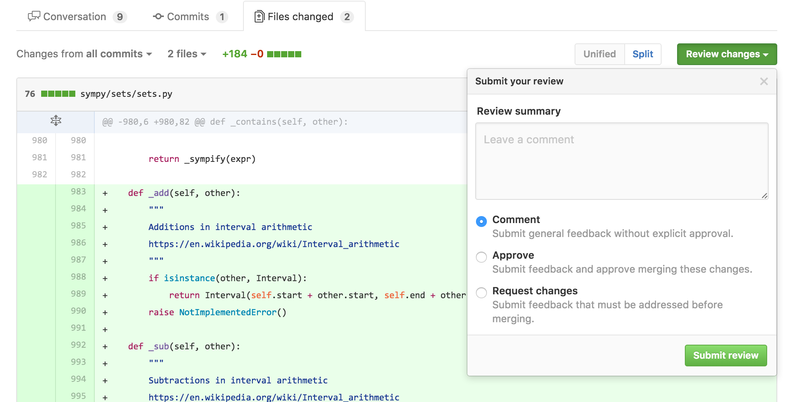
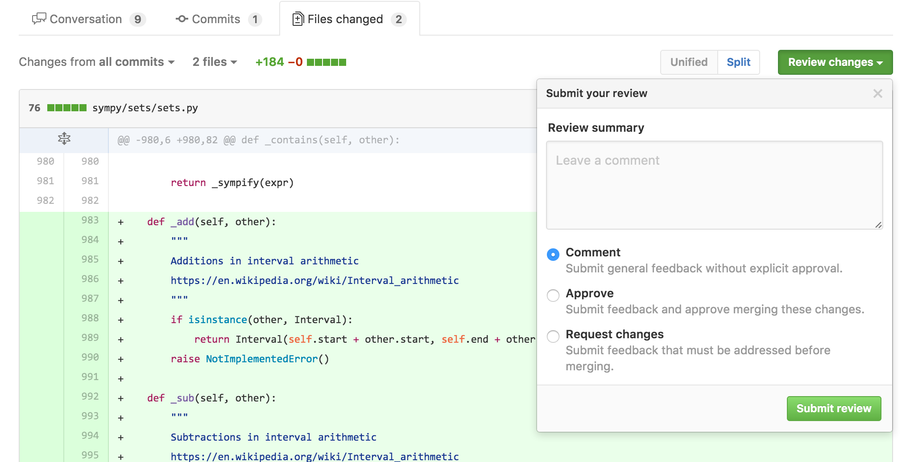

Discovery
Understanding the Current Process
Before designing, I met with 4 key stakeholders to go over the existing process and the problems they encountered with it.
Key findings included:
- Changes to activities were made by editing specific fields outlined in a “Master Planning Sheet” Excel file.
- Keeping track of proposed changes was very manual, with stakeholders communicating through edits of Excel files sent back and forth over multiple email threads.
User Needs
Based on this user session, I determined the following key user needs:
- Simple revisions - Whatever solution I created needed to be as simple as editing an Excel file, otherwise users would revert to previous Excel methods.
- Visibility on revisions - Keeping changes in one centralized area would cut down on time navigating through different Excel sheets and email threads.
Competitive Analysis
The most common revision control tool I'd used was GitHub, so I thought if GitHub had figured out group revision control for a complex codebase, I could leverage their solutions for our planning activities.
My key takeaways from GitHub were:
- GitHub allowed users to attribute each change with a “Commit message” for easier identification.
- When users wanted to push changes, they would issue a “Pull Request” which let others review and approve their changes and/or leave comments for everyone else to see.
 
